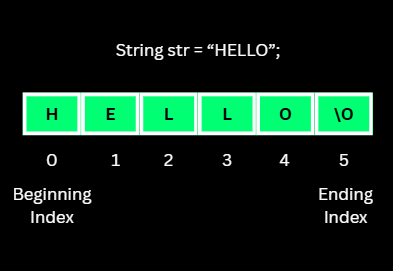
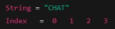
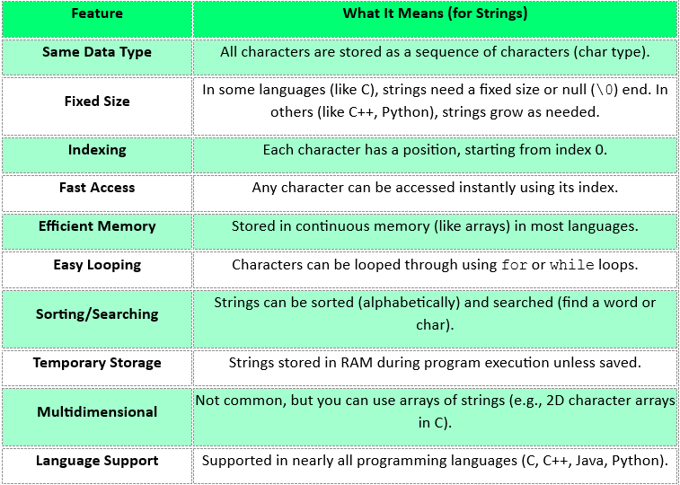
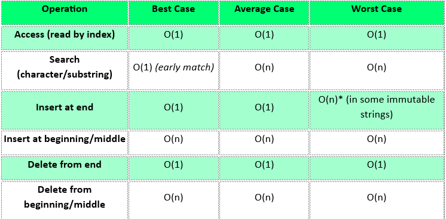

Access & length
s[i] is O(1) — a string is a contiguous character buffer. Length is O(1) in every modern language, but O(n) for C-style strlen.
O(1)time
A sequence of characters — letters, digits, symbols and spaces — the fundamental way text is represented in a program. Mechanically it is a character array, but with one twist that changes everything: in most modern languages a string is immutable.

An array of characters, plus immutability, plus a very large standard library.
A string is a row of characters with an index on each one, exactly like an array — s[0] is the first character.
The catch: in Java, Python and JavaScript you cannot change a character in place. Every "edit" quietly builds a brand-new string.
That is why result += ch inside a loop is a trap: n copies of a growing string is O(n²). Collect into a builder or a list and join once instead.
Most string interview questions are really array questions in disguise: two pointers, sliding window, or a 26-slot frequency count.
In C a string is char[] terminated by '\0', so a 5-character string needs 6 slots and strlen costs O(n) because it counts to the terminator.
std::string is mutable with O(1) size(). Java String, Python str and JS strings are immutable — safe to share, expensive to edit in loops.
Concatenation is O(n+m) on immutable strings because both halves are copied. StringBuilder, "".join(parts) and arr.join("") exist precisely to avoid that.
Naive pattern search is O(n·m) since it restarts on every mismatch. KMP precomputes a prefix table and never re-compares a character, giving O(n+m). And beware: one visible emoji can span several code units, so raw index arithmetic can split a character in half.

Type any text, then reverse it with two pointers, test it for a palindrome, chart its character frequency, or run a naive pattern search and count exactly how many comparisons it wastes.
Array mechanics, immutable semantics, and a very rich toolbox.

Four representations, and the one you should reach for inside a loop.
Reading is cheap, writing is not. That single rule explains every string performance surprise.
s[i] is O(1) — a string is a contiguous character buffer. Length is O(1) in every modern language, but O(n) for C-style strlen.
Immutable strings copy both operands into a new buffer, so joining n pieces one at a time is O(n²). This is the most common accidental slowdown in string code.
s.substr(i, k), s[i:j], s.slice(i, j) — copies k characters, so it costs O(k), not O(1).
Same shift cost as an array, plus a fresh allocation when the string is immutable. Build the result in a mutable buffer instead of editing repeatedly.
Two pointers swapping inwards: O(n) time, O(1) space when the buffer is mutable. Immutable languages need an O(n) char array or a builder.
Compare from both ends inwards and bail out on the first mismatch. Skip non-alphanumerics and normalise case if the input is a sentence.
A 26-slot integer array (freq[c - 'a']) beats a hash map for lowercase problems. Backs anagram checks, first-unique-character and top-k.
Naive scan restarts after every mismatch: O(n·m). KMP builds a prefix table so it never re-compares a matched character: O(n+m).
Sorting the letters of a word gives a canonical key — the standard trick for grouping anagrams together in one pass over the input.
Library one-liners that all cost O(n) because they walk the whole string. Normalise with lower() and trim() before comparing user input.
Pick an operation, pick a language, copy it out. Your language choice is remembered across every page.
n is the text length and m the pattern length. Immutability is what turns cheap-looking edits expensive.

The syntax and templates worth keeping open in a second tab. Print this section or grab the full multi-topic sheet.
Every one of these has cost someone an interview. Open each and check yourself.
Eight problems, easy to hard, each with a one-line hint. Try it without the hint first — the hint is for when you are properly stuck, not for when you are impatient.